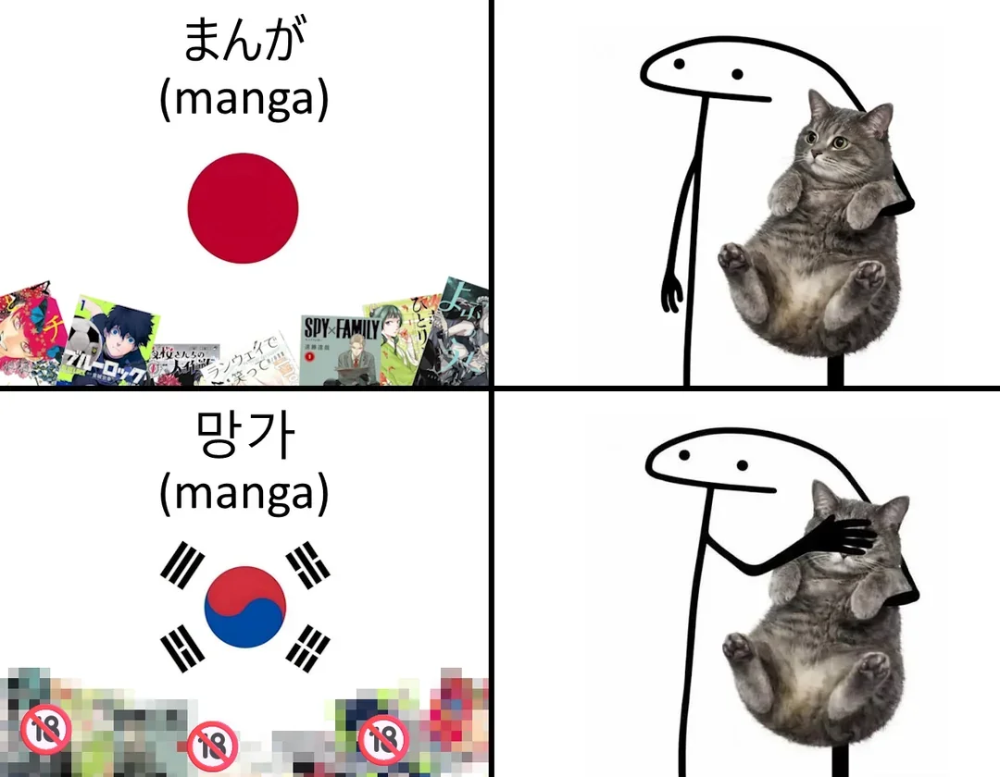

해외도 hentai로 구분함

해외도 hentai로 구분함
동인지라는 것도 사실 성적인 용어가 아니라던데
ㅇㅇ 동인행사에서 낸 만화들을 동인지라 카던데
근데 야한거만 입수해서 동인지로 붙여버려서 야한만화 = 동인지 된듯
만화도 아님 그냥 책들을 다 동인지라고 함
만화가 주를 이루는거 뿐이지.
그래서 떡인지라고 따로부르기도함
동호인 동아리 뭐 이런거임
우리가 잘 아는 시인 윤동주도 동인지내고 그랬음
동인지도 걍 개인만화에 가까운데, 그런 것중 야한 것만 수입(해적) 되니까.
어 딜도 망가
"망가" 가 그냥 일본어로 "만화" 인데 어쩌다 저래된건지 모르겠음
안야한건 그냥 만화라고 부르니까 ㅋㅋ
망가로 들어오는것들이 저러니까.
자연스러운 언어현상임
아무래도 저런거 받는 사이트들이 저런거만 올라와있다보니 ㅋㅋㅋ manga만쳐도 저런거만 쏟아지지않았을까 싶음
지금말고 옛날에는 굳이 찾아오는것중에
그중 음지로 잘 퍼지는게 야한거라서
동인지. 망가 = 야한거 이렇게 굳어진거 아닐까?
나도 첨엔 야한거볼려다가 접했음 ㅋㅋ
에로망가 단어때문이 아니었을까 싶기도
혼돈 파괴 망가..
자매품으로 동인지도
나 초딩때 영어학원에서 원어민 쌤이
"난 망가를 좋아해. 너희는 뭘 좋아하니?"
라고 프리토킹 주제 줬을때 뇌정지 왔었음ㅋㅋㅋㅋ
저희도 망가 좋아해요
검열과 로컬라이징을 하면 들어올 수 있는 수준의 만화(망가)-> 정식으로 들어오면서 만화라 불림.
검열로도 힘들어서 못 들어오던 만화(망가)-> 정식으로 못 들어오니 개인번역과 불법 루트로 원래 부르던 호칭인 망가로 들어옴.
동인지 상업지 떡인지 망가